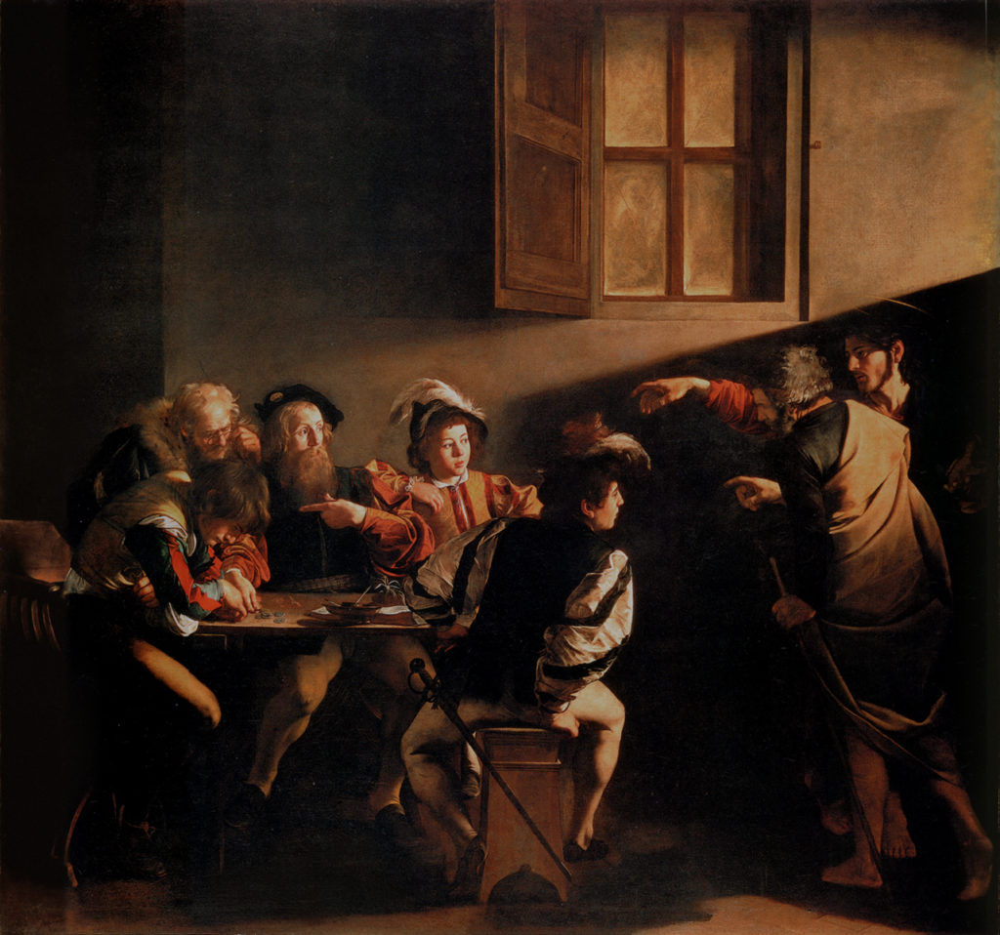
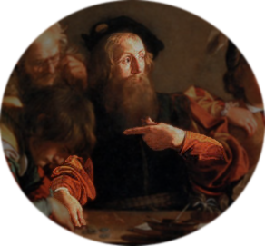
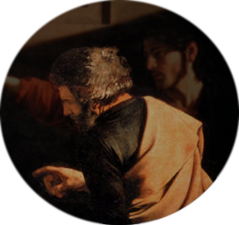
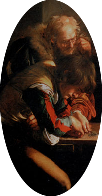
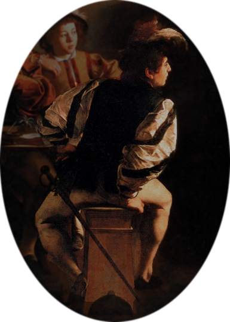
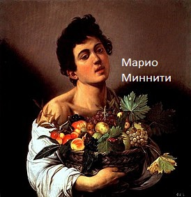
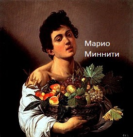
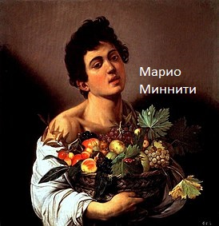

Находите места интереса на картине.
Осталось найти





Луч света следует за рукой Христа и падает на лицо будущего апостола.
Перед нами убогая обстановка: вокруг полутьма. Матфей здесь - продажный чиновник, плут.
Эта грязная таверна - его штаб квартира. Где со своими помощниками он ведет незаконный бизнес и в
разгар очередной сделки к нему приходит Иисус
Только Матфей понимает что сейчас произошло. Одна его рука еще сжимает монеты на столе, но он уже не смотрит туда. Его недоуменный взгляд обращен на Христа и апостола
Петра а своей левой рукой он недоуменно указывает на себя.
К слову, некоторые эксперты считают, что Матфей указывает не на себя, а на слева сидящего человека, как бы не веря, что он нужен Христу
Вопросительный жест Петра
За столом, помимо святого, еще четыре человека, и никто из них не понимает, что происходит. Двое слева вообще ничего не видят - они заняты пересчетом денег.
Охранник уже поднимается со стула и готов в любой момент обнажить свою шпагу, чтобы убить нежелательных свидетелей
Подробный разбор Картины
Караваджо почти до предела низводит пафос изображенной сцены. Вместо того чтобы поместить Христа в центр полотна,
он частично загораживает его фигурой спутника – пусть зритель приложит усилия, чтобы найти Иисуса. С теологической
точки зрения это имело глубокий смысл, особенно в священный 1600-й год: как и в организационной структуре папства,
между Христом и зрителем располагался святой Петр. К тому же это был точно рассчитанный психологический прием: пряча
фигуру Христа, художник фокусирует внимание на самой важной детали – его протянутой правой руке с указующим перстом.
Божественное и земное объединены здесь идеально, а ведь в этом и заключается суть произведения. Жест Христа заимствован
с одной из самых известных римских фресок, изображающей момент божественного творения, когда Бог Отец протягивает палец
Адаму на потолке Сикстинской капеллы, расписанном Микеланджело. Луч света на картине Караваджо исходит не столько из грязного окна,
сколько из этой протянутой руки Иисуса, это свет Евангелия, падающий на лицо розовощекого мальчика, которому, в общем-то,
не место среди этих отбросов общества. Он чуть отпрянул от света и инстинктивно ищет защиты у Матфея, доверчиво положив руку
ему на плечо. Лицо самого Матфея также освещено, щеки его слегка покраснели от того, что его внезапно выставили на всеобщее обозрение;
Матфей отвечает на призыв Иисуса жестом, который был знаком каждому римлянину и каждому пилигриму и означал: «Ты обращаешься ко мне ?» Правда,
некоторые исследователи полагают, что он указывает на фигуру, сгорбившуюся справа от него, и что жест должен интерпретироваться:
«Ты имеешь в виду его ?» – но мне представляется несомненным, что именно бородачу суждено стать апостолом Матфеем: богатство его костюма,
любимый Караваджо черный бархат делают его дальнейший переход к смиренности более выразительным.
И еще один момент в создании картины примечателен: впервые Караваджо не стремится к прямому обмену взглядами между его персонажами и зрителем
– жест Матфея был бы при этом слишком демонстративным, чуть ли не заискивающим. Мы наблюдаем за этой сценой как свидетели, допущенные
в виде особого исключения и спрятанные в темном углу помещения. Тот факт, что фигуры изображены почти в натуральную величину,
создает впечатление, что все это происходит у нас на глазах, и обостряет наше восприятие. Саймон Шама. Книга:"Сила Искусства"

Немного биографии
В начале 1590-х годов Караваджо вполне предсказуемо переехал в Рим – шумный муравейник,
кишевший неугомонными молодыми художниками, жаждавшими работы, славы и удовольствий (не обязательно в таком порядке).
Он вел жизнь ночного гуляки, непрерывно подпитывавшегося тестостероном,
шатался по улицам в поисках приключений, приставал к прохожим и напивался до бесчувствия в различных злачных местах. Его приятели-художники
Просперо Орси и Марио Миннити, как и архитектор Онорио Лонги, тоже были далеко не ангелы, в любой момент могли пустить в ход свои клинки и постоянно
нарывались на неприятности со сбирри , папской полицией. Компания часто проводила время с проститутками, которые тоже дрались друг с другом,
как уличные кошки, за территорию, клиентов и благосклонность сутенера.
Но приятелей Караваджо нельзя было назвать просто хулиганствующими бездельниками.
Многие из них были неординарными личностями, обладали талантом и непомерными амбициями.
Они затевали драки и водились с уличными девками, но увлекались также поэзией, музыкой,
театром и философией. Их опьяняло не только кислое вино, но и новые идеи, и они даже посещали лекции,
проводившиеся в основанной Федерико Цуккаро Академии святого Луки.


 
